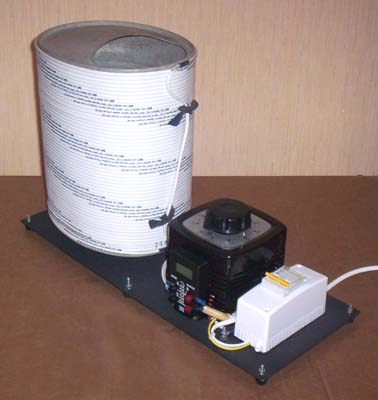
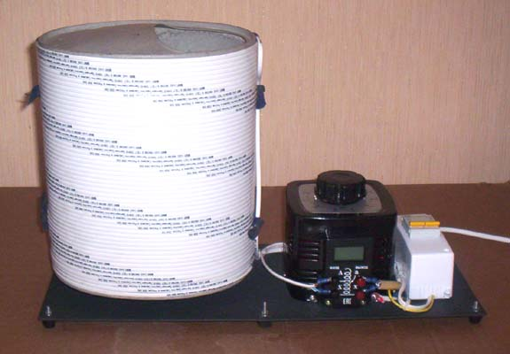
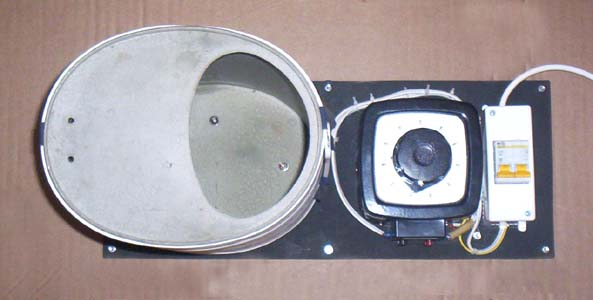
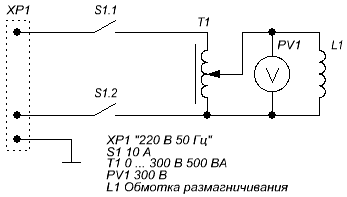
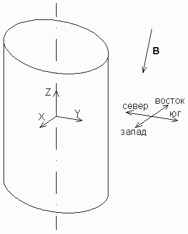
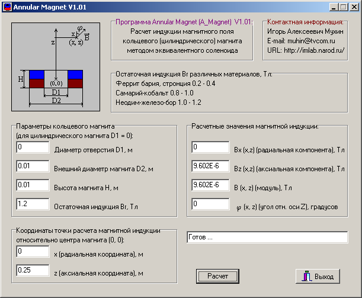
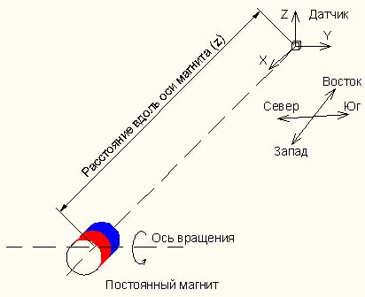

Пассивный однослойный магнитный экран с функцией размагничивания затухающим переменным магнитным полем

1. Введение
При разработке и конструировании датчиков и приборов для измерения слабых магнитных полей [10, 12, 16 - 19] зачастую требуется проводить испытания в поле, существенно меньшее, чем постоянно присутствующее поле Земли (примерно 50 мкТл). То есть желательно, чтобы индукция магнитного поля в зоне расположения датчика прибора не превышала хотя бы нескольких микротесла. Кроме того, необходимо существенно уменьшить влияние переменных магнитных полей технической природы, создающих неприемлемые помехи. Один из возможных вариантов - расположение датчика вдали от источников постоянных и переменных магнитных полей и ориентация его измерительной оси в направлении минимума магнитного поля Земли (восток-запад).Однако при этом остается поперечная составляющая поля Земли, которая может оказывать существенное влияние на результаты измерений вследствие кросс-эффекта [4 - 6]. Также надо учитывать, что найти свободную от магнитных полей искусственного происхождения зону далеко не просто, к тому же остается необходимость каким-либо образом обеспечить электропитание измерительной аппаратуры. Другой вариант - использование пассивных или активных магнитных экранов. Активный магнитный экран [7] представляет из себя трехмерную систему катушек (например, катушек Гельмгольца [13, 14]), позволяющую в соответствии с принципом суперпозиции магнитных полей [9] скомпенсировать поле Земли в рабочей зоне. Недостатком активного магнитного экрана является его сложность, необходимость использования соответствующего дорогостоящего оборудования (трехкомпонентный магнитометр и источники питания с системой управления) и ограниченная полоса подавления переменных магнитных полей. Пассивный магнитный экран [2, 3] состоит из одно- или многослойной оболочки из листового магнитомягкого ферромагнитного материала с высокой магнитной проницаемостью и низкой коэрцитивной силой, охватывающей рабочую зону магнитного вакуума. Качественные пассивные многослойные магнитные экраны, позволяющие уменьшить внешнее магнитное поле в сотни ... тысячи раз, весьма громоздки, сложны в изготовлении и дороги. Если достаточно уменьшить внешнее поле на порядок (в 10 ... 20 раз), вполне возможно применение однослойных магнитных экранов из малоуглеродистой стали. При этом необходимо учитывать, что всякий раз перед проведением измерений или при смене местоположения их необходимо размагничивать, например, посредством затухающего переменного магнитного поля [15].
2. Теория
Пассивные магнитные экраны обычно изготавливаются цилиндрической или близкой к цилиндрической формы, чтобы по возможности избежать острых углов и связанных с ними концентраций магнитных полей. Коэффициент экранирования c пассивного однослойного цилиндрического магнитного экрана определяется по формуле [8]:
(2.1)
где m - магнитная проницаемость материала экрана, m0 = 4p ∙ 10-7 В ∙ с/А ∙ м = 4p ∙ 10-7 Гн/м – магнитная постоянная, r1 - внутренний радиус экрана, r2 - наружный радиус экрана (r2 - r1 - толщина экрана).
Коэффициенты экранирования для цилиндрического пассивного магнитного экрана внешним диаметром 200 мм (r2 = 100 мм), изготовленного из листового железа разной толщины (0.5 мм - r1 = 99.5 мм, 0.7 мм - r1 = 99.3 мм, 1.0 мм - r1 = 99.0 мм, 1.5 мм - r1 = 98.5 мм, 2.0 мм - r1 = 98.0 мм) и с разными величинами относительной магнитной проницаемости, приведены в таблице 2.1.
Таблица 2.1. Расчетное значение коэффициента экранирования цилиндрического пассивного магнитного экрана внешним диаметром 200 мм из ферромагнитного материала разной толщины и с разной относительной магнитной проницаемостью.
| Относительная магнитная проницаемость m/m0 | Толщина, мм | ||||
| 0.5 (r1 = 99.5 мм) | 0.7 (r1 = 99.3 мм) | 1.0 (r1 = 99.0 мм) | 1.5 (r1 = 98.5 мм) | 2.0 (r1 = 98.0 мм) | |
| 1000 | 3.489 | 4.481 | 5.965 | 8.429 | 10.880 |
| 1500 | 4.736 | 6.225 | 8.453 | 12.151 | 15.830 |
| 2000 | 5.983 | 7.969 | 10.940 | 15.873 | 20.780 |
| 4000 | 10.970 | 14.944 | 20.890 | 30.760 | 40.580 |
Из формулы (2.1) и таблицы 2.1 видно, что коэффициент экранирования тем выше, чем больше относительная магнитная проницаемость материала экрана (m/m0) и чем он толще (r2 /r1). Например, цилиндрический магнитный экран с внешним диаметром 200 мм, изготовленный из листового оцинкованного железа толщиной 1 мм (r1 = 99 мм, r2 = 100 мм, m/m0 = 2000), имеет коэффициент экранирования c ≈ 11 и обеспечивает подавление внешнего магнитного поля примерно на порядок.
3. Конструкция и принцип работы
Корпус пассивного магнитного экрана выполнен из одного слоя оцинкованного железа толщиной 0.7 мм. Для удобства работы с экраном его поперечное сечение выбрано эллиптической формы. Поверх корпуса двужильным проводом в поливинилхлоридной (ПВХ) изоляции ШВВП сечением 2 х 0.5 мм2 намотана в один слой обмотка размагничивания. Жилы провода соединены последовательно. Для создания размагничивающего тока с затухающей амплитудой используется регулируемый автотрансформатор (ЛАТР), подключаемый к сети переменного тока напряжением 220 В частотой 50 Гц через защитный автомат на 10 А. Все узлы смонтированы на стальном основании (рис. 3.1, 3.2). Электрическая принципиальная схема устройства размагничивания приведена на рис. 3.3. При проведении процедуры размагничивания напряжение на размагничивающей обмотке с помощью ЛАТРа вручную сначала резко увеличивается (в некоторых случаях примерно до 150 В, обычно - до 60 ... 90 В) и сразу же достаточно плавно уменьшается до нуля, после чего желательно отключить защитный автомат. Время процедуры размагничивания не превышает 3 ... 4 секунд. Индукцию магнитного поля внутри экрана после размагничивания можно проконтролировать с помощью микротесламетра [11]. Магнитный экран должен быть установлен в рабочем положении до проведения процедуры размагничивания, после нее экран перемещать нельзя.

Рис. 3.1. Однослойный магнитный экран с устройством размагничивания. Вид сбоку.

Рис. 3.2. Однослойный магнитный экран с устройством размагничивания. Вид сверху.

Рис. 3.3. Схема электрическая принципиальная устройства размагничивания.
4. Испытания
Испытания пассивного магнитного экрана были проведены с использованием цифрового трехкомпонентного микротесламетра [18]. Помещенный в центр экрана датчик микротесламетра приблизительно сориентирован по его осям (X - короткая ось эллипса, Y - длинная ось эллипса, Z - вертикальная ось). Магнитный экран устанавливался в вертикальном положении (направление оси экрана близко к направлению магнитного поля Земли B), короткая ось эллипса ориентирована по направлению восток-запад, длинная - север-юг (рис. 4.1). Неподалеку от экрана на расстоянии 0.5 ... 1.0 м присутствовали достаточно крупные ферромагнитные объекты и небольшие постоянные магниты. Результаты замеров магнитной индукции приведены в таблице 4.1.

Рис. 4.1. Схема проведения измерений в пассивном магнитном экране: Экран установлен вертикально, короткая ось эллипса приблизительно соответствует направлению восток-запад, длинная - север-юг, XYZ - измерительные оси датчика микротесламетра, сориентированы по соответствующим осям экрана, B - магнитная индукция поля Земли (направление с юга на север сверху вниз почти вертикально).
Таблица 4.1. Магнитная индукция в экранируемой области, мкТл.
| Компонента магнитной индукции | Без экрана | В неразмагниченном экране | В размагниченном экране |
| Bx, мкТл | 0.0 | 2.4 | -0.3 |
| By, мкТл | -9.2 | -1.6 | -0.2 |
| Bz, мкТл | -52.4 | 0.6 | 0.7 |
| B, мкТл | 53.2 | 3.0 | 0.8 |
По результатам испытаний видно, что с помощью магнитного экрана можно существенно ослабить магнитное поле Земли и окружающих объектов и получить внутри рабочей зоны экрана постоянное магнитное поле с компонентами менее 1 мкТл.
Далее была проведена оценка степени экранирования магнитного поля постоянного цилиндрического магнита, размещаемого на некотором расстоянии с внешней стороны экрана. Расчет индукции магнитного поля цилиндрического магнита выполнен с помощью программы A_Magnet [1]. Результат расчета показан на рис. 4.2.

Рис. 4.2. Расчет аксиальной составляющей магнитной индукции на оси на расстоянии 0.25 м от центра цилиндрического постоянного магнита состава Nd-Fe-B диаметром 10 мм высотой 10 мм с помощью программы A_Magnet [1]. Магнитная индукция равна примерно 9.6 мкТл.
Расчетное значение аксиальной составляющей магнитной индукции цилиндрического постоянного магнита состава Nd-Fe-B диаметром 10 мм высотой 10 мм с остаточной индукцией 1.2 Тл на его оси на расстоянии 0.25 м от центра составляет примерно 9.6 мкТл. Схема измерений магнитного поля цилиндрического постоянного магнита показана на рис. 4.3. Датчик микротесламетра помещается внутрь магнитного экрана, ориентация осей экрана и датчика аналогична рис. 4.1, после чего магнитный экран размагничивается, и производятся замеры магнитной индукции. Далее к магнитному экрану с внешней стороны подносится постоянный магнит (расстояние между центром магнита и датчика составляет 0.25 м), и также производятся замеры магнитной индукции. После этого магнит поворачивается на 180 градусов, процедура измерения повторяется.

Рис. 4.3. Схема измерений изменений магнитного поля внутри пассивного магнитного экрана посредством внешнего постоянного магнита.
Результаты измерений приведены в таблице 4.2.
Таблица 4.2. Магнитная индукция в экранируемой области, мкТл.
| Компонента магнитной индукции | Без магнита (после размагничивания экрана) | С магнитом (без повторного размагничивания экрана) | С магнитом, повернутым на 180 градусов (без повторного размагничивания экрана) |
| Bx, мкТл | -0.4 | 2.3 | -4.5 |
| By, мкТл | 0.1 | -0.7 | -0.1 |
| Bz, мкТл | 0.5 | -0.2 | 2.7 |
| B, мкТл | 0.6 | 2.4 | 5.2 |
Из таблицы видно, что появление источника постоянного магнитного поля вблизи магнитного экрана в процессе измерений и изменение его ориентации довольно существенно изменяет поле внутри экрана. Если после данных событий провести процедуру размагничивания экрана, то магнитное поле внутри экрана вновь уменьшится примерно до предшествующих событию значений. Поэтому при проведении работ с магнитным экраном необходимо либо соблюдать стабильную магнитную обстановку вокруг него, либо решать проблему посредством регулярного проведения процедуры размагничивания.
5. Применение
Магнитный экран может применяться для настройки датчиков феррозондов и магнитометров [10, 12, 16 - 19], в частности, для приблизительной наилучшей ориентации кольца феррозонда в измерительной катушке, а также для снятия шумовых характеристик приборов.
6. Заключение
Рассчитан, сконструирован и испытан пассивный магнитный экран с коэффициентом подавления примерно 10 ... 20. Магнитный экран имеет несложную конструкцию, не требует дефицитных материалов и достаточно прост в изготовлении, отличается компактностью и транспортабельностью.
Ссылки:
30.09.2022
Альтернативные источники
энергии
Компьютеры и
Интернет
Магнитные поля
Механотронные системы
Перспективные
разработки
Электроника и
технология